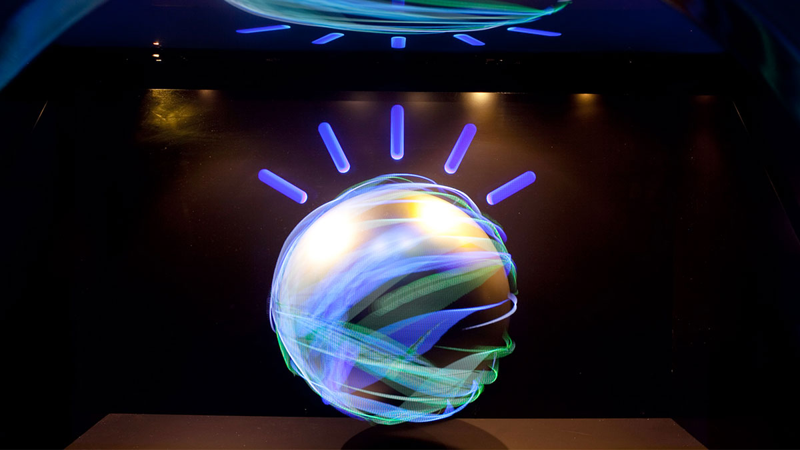

GENERAL
IBM Watson este unul dintre cele mai impresionante exemple de inteligență artificială aplicată.
Acest sistem a fost creat pentru a ajuta la rezolvarea problemelor complexe și a fost dezvoltat
în principal pentru a concura în emisiunea TV Jeopardy!, unde a fost capabil să învingă doi campioni umani.
Watson este o platformă AI cognitivă, bazată pe cloud, care poate procesa și analiza cantități uriașe
de date structurate și nestucturate, permițând utilizatorilor să ia decizii mai bune și mai rapide. În
această lucrare, vom explora câteva aspecte cheie ale Watson și vom examina impactul său în lumea afacerilor
și a cercetării.
MOD DE FUNCTIONARE / UTILIZARE
În primul rând, Watson utilizează o tehnologie cunoscută sub numele de
„procesare naturală a limbajului” pentru a procesa textul scris și vorbit.
Acesta este un proces complex care implică înlănțuirea de cuvinte și analiza
lor pentru a înțelege sensul întregii propoziții sau discursului.
Capacitatea
lui Watson de a procesa aceste tipuri de date îl face extrem de util pentru domenii
precum analiza social media, marketingul digital și dezvoltarea de chatbot-uri.
În al doilea rând, Watson este capabil să învețe de la datele pe care le primește și să își
îmbunătățească performanțele în timp. Acest proces se numește învățare automată și poate fi
utilizat pentru a crea modele predictive, cum ar fi analiza clienților sau previziuni ale pieței.
În plus, Watson poate fi utilizat și pentru a crea sisteme de recomandare personalizate, care ajută
companiile să ofere clienților lor produse și servicii relevante.
În plus, Watson poate fi utilizat și pentru a crea sisteme de recomandare personalizate, care ajută
companiile să ofere clienților lor produse și servicii relevante.
IMPACT
Watson a fost utilizat cu succes în mai multe domenii, cum ar fi sănătatea și
medicina, unde a fost folosit pentru a analiza și a diagnostica afecțiuni complexe.
De exemplu, în 2013, Watson a fost utilizat pentru a ajuta medicii să diagnosticheze un
caz rar de cancer la sân la o pacientă din Japonia. De asemenea, Watson poate fi utilizat
și în cercetarea științifică, pentru a analiza datele și pentru a descoperi noi informații și ipoteze.
